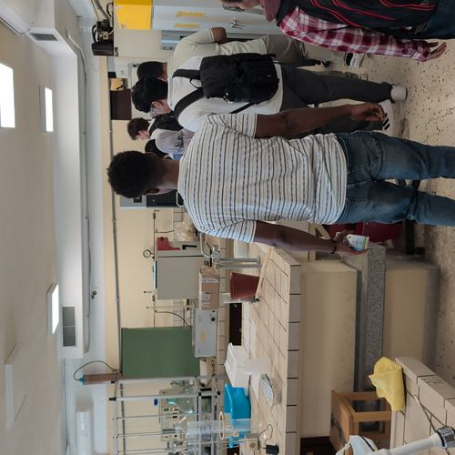
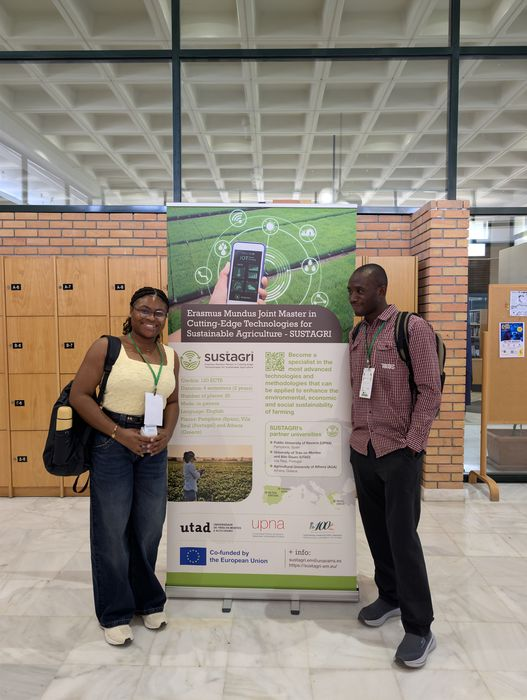

Gallery
field & campus photos




PAMPLONA, SPAIN · ORIGINALLY ZARIA, NIGERIA
Digital Agriculture · Computer Vision · Geospatial Machine Learning
Agricultural engineer with a long-term research focus on computer vision and geospatial machine learning for digital agriculture. Interests span self-supervised deep learning for crop-stress detection and vegetation-index estimation from UAV and multispectral imagery, hybrid deep-learning architectures for environmental process modelling, agricultural control systems, and reproducible, uncertainty-aware ML pipelines complemented by GIS and satellite remote sensing.
EMJMD RESEARCH SCHOLAR
Correcting and extracting information from satellite and drone imagery, the data layer beneath everything else.
Modelling how water moves and erodes land, gully formation and sediment transport.
How much water a crop needs and when to apply it, farm-level decision-making.
Turning sparse field samples into reliable, spatially continuous maps.
Foundational architectures that generalize across agronomic imaging tasks.
Operations research for real production and market decisions.
Nigerian Research Journal of Engineering and Environmental Sciences, 5(1), 198–204.
Proc. African Conf. on Precision Agriculture (AfCPA), 2(1), 100–120.
International Journal of Research and Scientific Innovation (IJRSI), 13(7), 2920–2950.
doi.org/10.51244/IJRSI.2026.1307000217International Journal of Research and Scientific Innovation (IJRSI), 13(7), 2951–2989.
doi.org/10.51244/IJRSI.2026.1307000218International Journal of Research and Scientific Innovation (IJRSI), 13(7), 2990–3020.
doi.org/10.51244/IJRSI.2026.1307000219Biosystems Engineering (Elsevier), Under Review.
doi.org/10.5281/zenodo.21760025Environmental Monitoring and Assessment (Springer Nature), Under Review.
doi.org/10.5281/zenodo.21760023European Journal of Agronomy (Elsevier), Under Review.
doi.org/10.2139/ssrn.7194382Zenodo.
doi.org/10.5281/zenodo.21843899Zenodo Preprint (v1.0.1).
doi.org/10.5281/zenodo.21798402JUN – AUG 2026
Dept. of Computer Engineering, Ahmadu Bello University, Zaria
Extended the Geometry-Agnostic Contrastive Learning (GACL) self-supervised framework by developing geometry-invariant representation-learning methods for agronomic imagery.
SEP 2025 – JUN 2026
Public University of Navarre, Spain & UTAD, Portugal
Completed graduate-level research training in the technological foundations of agricultural sustainability and precision-agriculture methods for sustainable crop production, across two partner institutions.
2024 – 2025
IAR-ABU, Nigeria
Engineered adaptive irrigation-scheduling algorithms in Python, fusing real-time soil-moisture and microclimate telemetry to automate greenhouse environmental control.
2022 – 2024
NAERLS, Nigeria
Trained and validated CNN-based crop-stress detection models in TensorFlow, achieving 78% classification accuracy on multispectral UAV imagery; automated UAV flight-path planning for high-throughput field phenotyping.
2021 – 2022
BOMO-Basin Project, Nigeria
Implemented closed-loop control logic for a 1-hectare smart drip-irrigation array and quantified feedback-loop performance linking real-time soil-moisture data to automated delivery scheduling.
2022 – 2024
Yankari Nasarawa Farms, Nigeria
Managed day-to-day operations of a commercial poultry facility, including automated climate-control and water-dosing systems, optimizing resource-management workflows for animal welfare and operational efficiency.
2017 – 2020
NCAM, Ilorin & IAR, Zaria, Nigeria
Built Python data-logging pipelines to benchmark mechanization efficiency on locally engineered machinery; collected and documented soil-profile and environmental data supporting baseline hydrological research.
MAR 2024 – MAR 2025
Depts. of Agricultural & Bioresources Engineering and Animal Science, ABU, Nigeria
Data collection, analysis, and literature review across water & irrigation systems, soil & erosion assessment, and postharvest/animal systems.
2020 – 2024
ABU Zaria (NAMET)
Supplementary tutorials in Differential Equations & Transforms, Irrigation System Design, and Computer Applications in Agric. Engineering.
2023 – 2024
National Assoc. of Agric. Engineering Students
Directed operational targets and inter-chapter scientific meetups for the national student body.
2023 – 2024
ABU Students' Union Government
Directed campus environmental protection and sanitation initiatives.
2020 – 2025
KOJYAF, Zango-Shanu, Zaria
Coordinated tutorial and mentorship programs preparing secondary students for JAMB entrance examinations.
2022 – 2023
Takai Academy, Zaria, Nigeria
Instructed senior classes in classical physics and computational principles.
PyTorch, TensorFlow, Keras, scikit-learn, CNNs
ENVI, QGIS, ArcGIS, Google Earth Engine, Sentinel imagery
APSIM Next Generation, Crop Simulation, Crop Growth Modelling
CMIP6, ERA5, ACCESS-S2, Climate Downscaling, Forecasting
COLMAP, Open3D, Multi-View Stereo, Pix4D, Agisoft Metashape
Time-series from soil-moisture, microclimate, and environmental telemetry
Python, MATLAB, R, Pandas, NumPy, SciPy, Jupyter, Git/GitHub, Zenodo
2025 – 2027
Cutting-Edge Technologies for Sustainable Agriculture — Public University of Navarre, Spain · UTAD, Portugal · Agricultural University of Athens, Greece
2019 – 2024
Ahmadu Bello University, Zaria, Nigeria
CGPA: 4.77/5.00 · Top 1% of graduating cohort · First Class Honours
2016 – 2018
Division of Agricultural Colleges, Ahmadu Bello University, Zaria
CGPA: 3.78/4.00 · Top 1% · Distinction
Catedrático/a de Universidad · Dept. Ingeniería, Área de Ingeniería Agroforestal
Public University of Navarre, Spain
(+34) 948 16 9173 (ext. 9173)
Edificio Los Olivos, Despacho 2058, P.Segunda
Assistant Professor
Agricultural University of Athens, Greece
+30 210 529 4070
Spain
+34 948 16 9077
From Zaria, Nigeria, through Spain (Pamplona, Madrid, Barcelona), Portugal, Greece, Qatar, Morocco, Ethiopia, France, Italy, and Germany, over the course of research travel, conferences, and the Erasmus Mundus programme.


Reach out directly, or send a message below. It goes straight to my inbox.